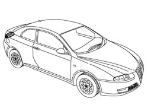
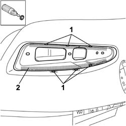
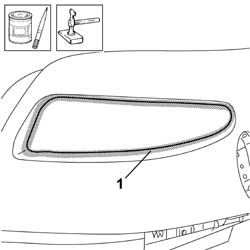
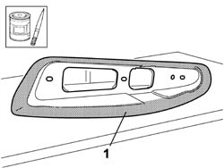
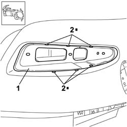
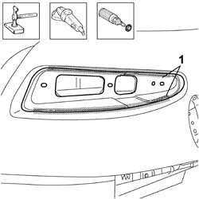
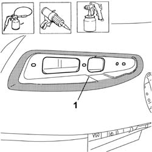

7210B75 TAIL LIGHT SEAT
- Path
- Procedures > 72 PANELS AND FRAME > 7210 REMOVING REFITTING > 7210B STRUCTURE ELEMENTS-CENTRAL AND REAR PART > 7210B75 TAIL LIGHT SEAT
- Kind
- repair procedure (removal / refitting; the operation number is the code)
- Applies to
- all engines; all production periods
- Interactive page
- https://sloeber94.github.io/elrnDB-aGt/en/#/125002046
Applies to: all engines; all production periods
 Removing
Removing
 Refitting
Refitting- Check that the components connected are not distorted by checking the bodyshell alignment measurements using suitable equipment (gauges, templates or jigs).
- Straighten the body as necessary.

Applies to: all engines; all production periods
- Use the rotary brush to highlight the spot welds at the points shown in the diagram.
- Remove the lamp housing from the rear wing.

Applies to: all engines; all production periods
- Straighten the edges of the vehicle using a hammer and dolly block.
- Remove the spot weld residues using a disc grinder.
- Use a rotary brush to clean the areas treated previously.
- Apply electro-weldable paint to the inside of the lamp housing.

Applies to: all engines; all production periods
- Work at the bench and apply electro-galvanzing paint to the outer edges of the replacement part.

Applies to: all engines; all production periods
Refitting
Removing- Position the replacement part correctly in the housing in the wing.
- Use the MIG welder to fill weld at the points shown in the diagram.

Applies to: all engines; all production periods
- Correct any distortions to the panel using a hammer and dolly block.
1. Use a disc grinder to level the welds.
- Use a rotary brush to clean the areas welded previously.

Applies to: all engines; all production periods
- Apply anti-oxidant protection to the areas involved in the welding.
- Seal the join lines between the replacement part and the vehicle.
- Proceed with the painting stage.
